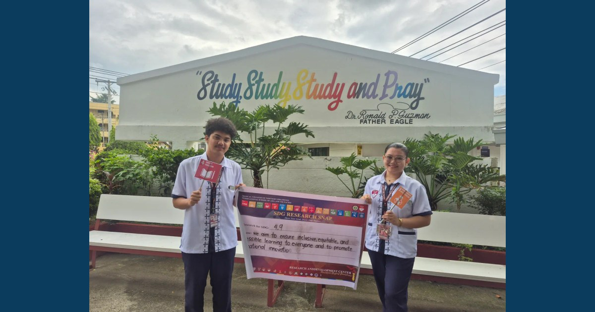

BSEd and BPEd Students Strengthen Research Skills Through Proposal Defense

The Medical Colleges of Northern Philippines (MCNP) and the International School of Asia and the Pacific (ISAP), through the Research and Development Center (RDC), supported the Research Proposal Defense of Bachelor of Secondary Education (BSEd) and Bachelor of Physical Education (BPEd) students, providing an academic platform for students to present their proposed studies and strengthen their research capabilities.
Read full article